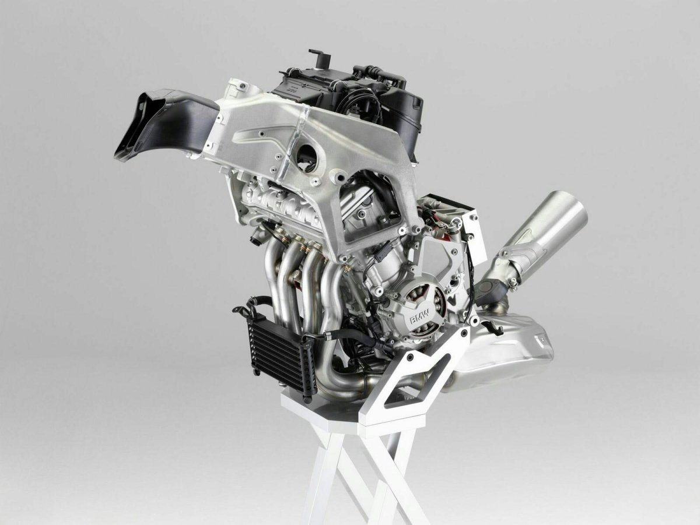

Perusahaan asal Jerman yang satu ini merupakan salah satu produsen otomotif ternama dunia dengan produk-produk terpopulernya ialah mobil. Akan tetapi perusahaan yang sudah lama bergerak dibidang otomotif ini ternyata juga memproduksi kedaraan dengan jenis Sepeda Motor. Produk kendaraan roda dua yang di buat oleh perusahaan BMW ini tidak kalah baiknya dengan kendaraan-kendaraan roda dua buatan negri Jepang yang sangat populer di setiap negara seperti Honda, Kawasaki dan Yamaha.
Mengusung nama BMW S1000RR motor dengan disain superbike dari BMW ini telah dilengkapi dengan mesin motor yang berkapasaitas 1000 cc. Mesin tersebut mampu memberikan tenaga motor yang lebih bertenaga dan lebih kencang dalam melakukan akselerasinya. Terlebih motor BMW S1000RR ini telah dilengkapi dengan teknologi-teknologi canggih yang saat ini sedang berkemang seperti teknologi Injeski sebagai sistem penyuplai bahan bakar serta beberapa fitur modern yang akan membuat perfoma motor BMW S1000RR ini makin optimal.
Motor sport BWM S1000RR ini memang sangat terkenal dan juga sanagt populer akan perfoma dan ketangguhannya di kalangan pecinta otomotif dalam negri bahkan hingga seluruh dunia. Bukan hanya itu saja motor yang merupakan motor superbike andalan BMW ini juga merupakan salah satu motor yang masuk dalam jajaran motor paling cepat didunia saat ini. Sementara itu motor yang memiliki disain full fairing ini juga telah mendapatkan penghargaan sebagai “Sport Bike Of The Year”, di tahun 2012 yang lalu.
Dan untuk masalah harga, ternyata harga BMW S1000RR ini di Indonesia dibanderol dengan harga kurang lebih sekitar 714 juta rupiah. Harga tersebut sangat sebanding dengan perfoma yang ditampilkan pada motor BMW ini, apalagi motor ini juga memiliki disain motor yang gagah dan keren. Nah untuk kalian yang ingin mengetahui lebih lanjut mengenai motor BMW S1000RR ini, otomaniac telah menyiapkan sedikit rangkuman seputar Spesifikasi dan Harga BMW S1000RR terbaru di Indonesia. Berikut adalah ulasannya.
| Mesin | Tipe mesin : Water/oil-cooled 4-cylinder 4-stroke in-line engine, four titanium valves per cylinder, two overhead camshafts |
| Kapasitas mesin : 999 ccm | |
| Sistem Pendingin : cairan (Liquid Cooled) | |
| Diameter X Langkah : 80 mm x 49,7 mm | |
| Perbandingan Kompresi : 13,0 : 1 | |
| Max power : 146 kW/13.500 rpm | |
| Max Torsi : 113 Nm/10.500 rpm | |
| Sistem transmisi : costant-mesh 6 speed | |
| Tipe kopling : Multiplate clutch in oil bath, anti-hopping clutch, mechanically controlled | |
| Engine management : Electronic injection | |
| Emisi : Closed-loop 3-way catalytic converters, EU-3 norm with electronically controlled interference pipe | |
| . | |
| Dimensi | Panjang : 2.050 mm |
| Lebar : 826 mm | |
| Tinggi : 1.140 mm | |
| Jarak sumbu roda : 1.438 mm | |
| Tinggi tempat duduk : 815 mm | |
| Berat kosong : 178 kgm | |
| Kapasitas bahan bakar : 17,5 liter | |
| . | |
| Rangka motor | Tipe Frame : Aluminium composite bridge frame, partially self-supporting engine |
| Suspensi Depan : Upside-down telescopic fork Ø 46 mm | |
| Suspensi Belakang : Aluminium 2-sided swing arm | |
| Rem Depan : Twin disc brake, floating brake calipers, 4-piston fixed caliper, diameter 320 mm | |
| Rem belakang : Single disc brake, single piston floating caliper, diameter 220 mm | |
| Rim Depan : 3.50 x 17″ | |
| Rim Belakang : 6.00 x 17″ | |
| Roda Depan : 120/70 ZR 17 | |
| Roda Belakang : 190/55 ZR 17″ | |
| . | |
| Kelistrikan | Alternator : 350 W |
| Batteray : 12 V 7 Ah |
Desain Dan Dimensi

Mengusung disain motor superbike dengan full fairing yang menutupi sebagian kerangka dan juga mesin pada motor BMW S1000RR ini, membuat motor yang memiliki kapasitas mesin 1000 cc ini menjadi nampak lebih gagah dan lebih keren dibadningkan dengan disain motor-motor pada umumnya. Apalagi motor ini juga di lengkapi dengan disain tangki motor yang cukup besar dan mampu menampung sekitar 17,5 Liter bahan bakar. Disain tangki pada motor BMW kali ini dikombinasikan dengan disain tempat duduk pengendara yang di buat lebih rendah dari tangki motor dan juga jok belakang, sehingga mampu meciptakan handling yang lebih mantap. Sementara itu dengan posisi stang motor yang cukup ideal akan memberikan kemudahan pada pengendara dalam mengendarai motor BMW S1000RR ini. Dari struktur tubuh motor BMW S1000RR ini memiliki panjang motor yang mencapai 2.050 mm dengan panjang motor 826 mm dengan ketinggian motor 1.140 mm. Dengan ukuran dimensi sebesar itu maka keseimbangan motor BMW S1000RR ini lebih stabil, apalagi motor ini memiliki cc yang cukup besar dan dengan ukuran dimensi sebesar itu maka keseimbangan motor akan lebih terjaga meskipun saat dipacu dengan kecepatan tinggi sekalipun. Harga BMW S1000RR di Indonesia memang terbilang cukup mahal, ya harga motor sport super bike ini memang mencapai sekitar 700 jutaan lebih. Namun jangan salah motor BMW S1000RR ini memang terkesan mahal namun jika kita meliat penampilan disain dan body full firing dari motor ini pasti kalian akan merasa kagum dengan motor sport superbike ini. Apalagi ketika motor ini di pacu dengan kecepatan tinggi selain memiliki perfoma motor yang tangguh, motor ini juga memiliki keseimbangan yang cukup stabil sehingga meski berkendara dengan kecapatan tinggi motor ini akan terasa lebih ringat saat melaju dengan kecepatan penuh.
Dapur Pacu
Untuk masalah perfoma, seperti yang sudah saya singgunh dipembukaan tadi motor BMW S1000RR ini memiliki perfoma motor yang tangguh dan handal. Motor superbike asal negri Jerman yang diproduksi oleh perusahaan dengan nam BMW ini di persenjati dengan mesin motor dengan kapasitas 1000cc (999cc). Selain itu motor sport besutan BMW ini juga dilengkapi dengan mesin 4 tak dengan 4 cilynder yang dikombinasikan dengan sistem DOHC 4 valve dengan sistem pendinginan berupa cairan (Liquid Cooled). Dan dengan menggunakan jenis mesin tersebut motor BMW ini mampu menghasilakn tenaga motor sebesar 146 kW dengan putaran mesin mencapai 13.500 rpm.
Dengan tenaga motor sebesar itu motor BMW S1000RR ini akan menjadi lebih bertenaga, apalagi didukung dengan torsi yang mencapai 113 Nm dengan putara n 10.500 rpm. Motor ini memang terbilang cepat dalam melakuakn akselerasinya, hal ini dibuktikan dengan dalam waktu sekitar 3,1 detik motor sport ini mamapu mnempuh jarak mulai dari 0-100 km/jam. Sedangkan untuk kecepatan maksimumnya motor BMW S1000RR ini mampu mencapai top speed sebesar 305 km/jam. Kemampuan untuk beraksele rasi dengan kecepatan yang tinggi ini tidak lepas dari beberapa teknologi canggih yang terpasang pada motor BMW S1000RR ini, seperti tekonologi Full Injeksi yang membuat motor sport ini menjadi lebih irit dan bertenaga.
Suspensi Dan Kaki kaki

Dengan kapasitas mesin motor yang cukup tinggi membuat pihak BMW pun memberikan beberapa jenis suspensi yang terbukti tangguh dan handal dikelas motor sport. Dengan memakai jenis suspensi Telescopik dengan diameter 46 mm dan memakai suspensi dengan jenis Swing arm dengan bahan Alumunium membuat kenyamanan dari motor sport ini menjadi lebih mantap, terlebih ketika sedang melewati lintasan yang bergelombang dengan kondisi aspal yang tidak rata. Kedua jenis suspensi tersebut dipadukan dengan frame (rangka) yang kuat dan kokoh berbahan Alumuniun baja. Dengan jenis rangka tersebut kenyamanan dalam berkendara anda pasti akan lebih nikmat dan lebih nyaman.
HargaBMW S1000RR yang cukup mahal membuat BMW selaku pembuat motor menerapkan beberapa sistem kaki-kaki yang kuat guna memaksimalkan perfoma dari motor sportnya ini. Memakai jenis ban Tubeless dengan ukuran 120/70 ZR untuk bagian depan dan ukuran ban 190/55 ZR untuk ban belakang serta memakai ukuran velg 17 Inchi menjadikan spake yang dihasilkan motor ini akan menjadi lebih mantap sehingga kecepatan pada motor pun akan menjadi lebih maksimal. Untuk sistem keselamatan BMW S1000RR ini dilengkapi dengan sistem pengereman berteknologi ABS yang mampu memberikan daya cengkram yang lebih kuat pada rem motor BMW S1000RR ini.
Fitur

Untuk fitur, motor asal Eropa ini telah dilengkapi dengan beberapa fitur modern nan canggih yang akan membuat perfoma motor sport ini menjadi lebih optimal. Beberapa fitur tersebut adalah seperti Panel instrumen dengan jenis digital dan analog, Dinamic Damping Control (DDC), Shift Assistant Pro (SAP), Rading Mode, dan Dinamic Traction Control (DTC). Dengan beberapa fitur canggih tersebut akan membuat perfoma motor sport ini makin maksimal dan makin keren. Jadi tidak heran jika di Indonesia harga BMW S1000RR ini terbilang mahal dan tidak semua orang bisa memiliki motor sport nan keren yang satu ini.